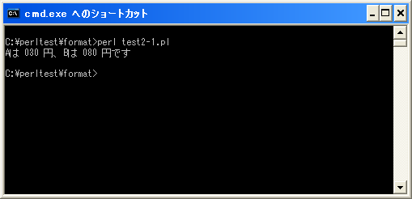

書式指定文字列の記述
ここからは書式指定文字列の記述方法を確認します。書式指定文字列は、そのまま表示される文字列と、値を変換して表示するフォーマット指定子を組み合わせて記述します。
フォーマット指定子は値の変換方法を具体的に記述する部分で、変換される値の数だけフォーマット指定子を記述する必要があります。フォーマット指定子の書式は次の通りです。
%[フラグ][最小幅][.精度/最大幅]型指定子
フォーマット指定子は「%」で始まり「型指定子」を記述します。またオプションとして指定可能な項目として「フラグ」「最小幅」「精度/最大幅」があります。
詳細な使い方は次のページ以降で細かく確認していきます。ここでは例として「%03d」と言うフォーマット指定子使ってみます。「%03d」を指定した場合は対応する値を「10進数の数値で幅を3桁にし0詰めにする」ものです。
printf("%03d", 30);
上記の場合は書式指定文字列にフォーマット指定子だけを記述しています。この場合は「30」と言う値を「%03d」を使って変換された「030」と言う文字列が画面に出力されます。
フォーマット指定子以外の文字列
書式指定文字列にはフォーマット指定子を記述しますが、フォーマット指定子以外の文字列を記述することも可能です。書式指定文字列の中のフォーマット指定子以外の文字列は、そのまま文字列として使われます。
printf("数値は %03d です", 30);
上記の場合は書式も指定文字列の中に「数値は 」と「 です」と言う文字列が記述されています。フォーマット指定子以外の文字列はそのまま文字列として使われますので結果として「数値は 030 です」と言う文字列が表示されます。
複数の値を変換
また変換する値は複数指定することができます。複数の値を変換する場合は、指定した値の数だけフォーマット指定子を記述します。
printf("Aは %03d 円、Bは %03d 円です", 30, 80);
上記の場合は変換する値が2つですのでフォーマット指定子も2つ記述しています。結果として「Aは 030円、Bは 080円です」と画面に表示されます。
値を複数指定する場合は、このようにカンマ(,)で区切って並べて記述して下さい。
1番目に記述された値は、書式指定文字列の中に最初に現れたフォーマット指定子を使って変換されます。同じように2番目の値は2番目に現れたフォーマット指定子で変換されていきます。このように記述された順番に従って変換が行われます。
サンプルプログラム
では簡単なプログラムで確認して見ます。
use strict;
use warnings;
use utf8;
binmode STDIN, ':encoding(cp932)';
binmode STDOUT, ':encoding(cp932)';
binmode STDERR, ':encoding(cp932)';
printf("Aは %03d 円、Bは %03d 円です¥n", 30, 80);
上記を「test1-1.pl」の名前で保存します(文字コードはUTF-8です)。そしてコマンドプロンプトを起動し、プログラムを保存したディレクトリに移動してから次のように実行して下さい。

( Written by Tatsuo Ikura )

著者 / TATSUO IKURA
初心者～中級者の方を対象としたプログラミング方法や開発環境の構築の解説を行うサイトの運営を行っています。